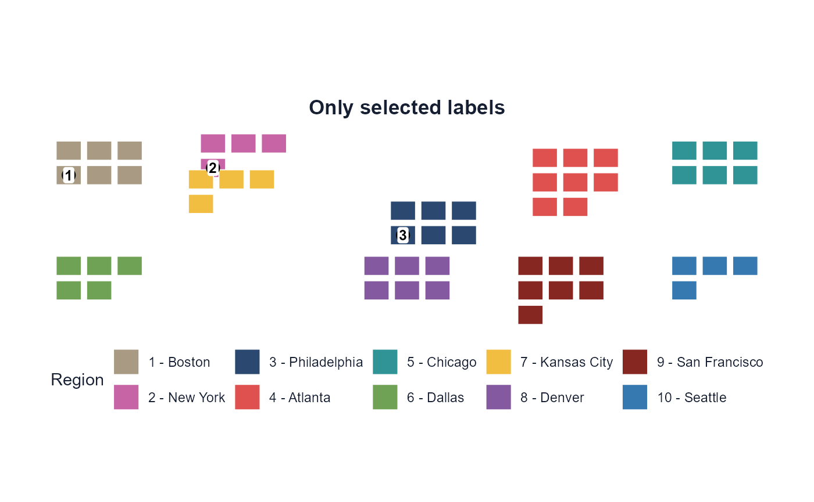
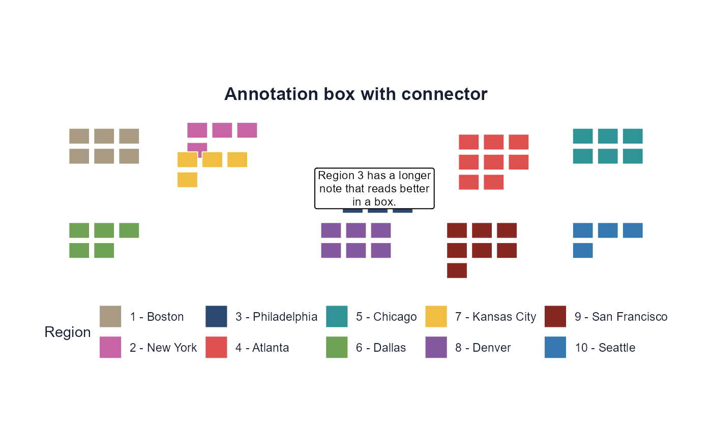
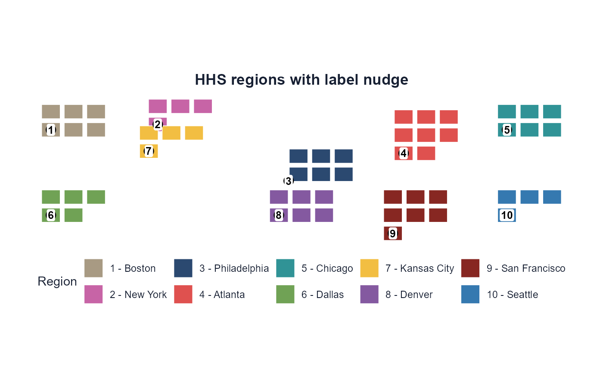
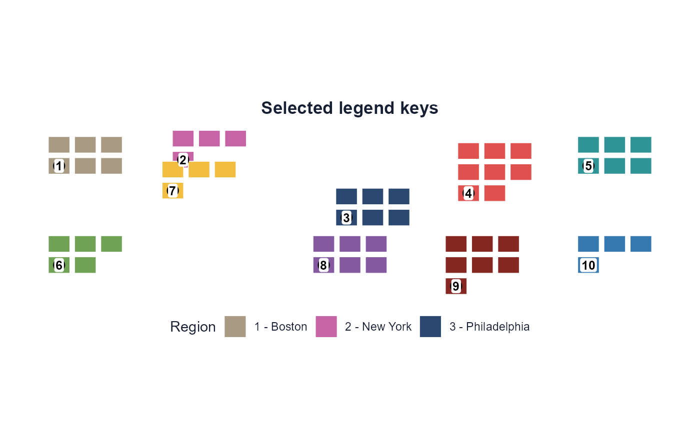
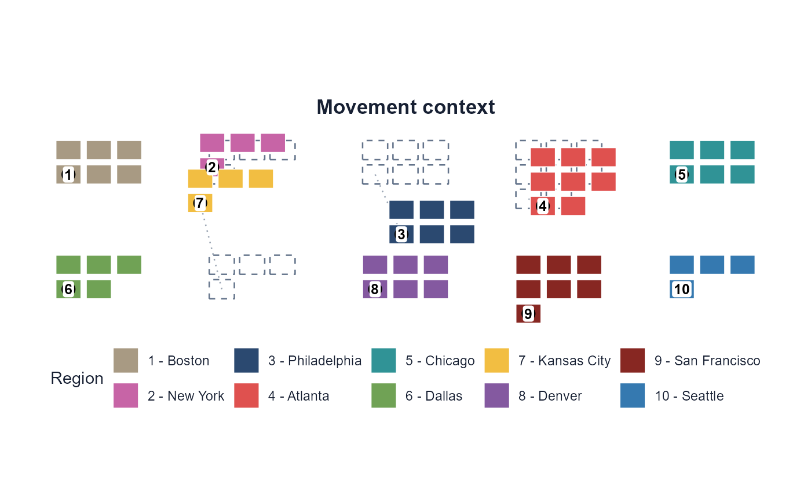

Labels and static output
Source:vignettes/labels-and-static-output.Rmd
labels-and-static-output.RmdLabels have their own data model in dragmapr because
draggable plots often need two kinds of movement:
- region offsets move all geometries in a group;
- label offsets nudge only the text marker after the region has moved.
If users want a static image after the draggable edit, the same data
model can be rendered back through ggplot2. This means a
Shiny app is optional: once the region and label offset CSVs exist,
render_dragged_map() can reconstruct the layout later in a
script, report, or document workflow.
Labels can also be configured or omitted when the draggable helper is written:
# No labels at all
drag_map_prototype(x, "region", labels = FALSE)
# Labels follow their region but cannot be nudged independently
drag_map_prototype(x, "region", label_col = "name", draggable_labels = FALSE)
# Text only — no visible marker behind the label text
drag_map_prototype(x, "region", label_col = "name", label_marker_shape = "none")
# Circle markers — label_radius only applies when shape is "circle"
drag_map_prototype(x, "region", label_col = "name",
label_marker_shape = "circle",
label_radius = 16, label_text_size = 14)
# Rounded-box markers (default) with explicit size
drag_map_prototype(x, "region", label_col = "name",
label_marker_shape = "rect",
label_width = 80, label_height = 32, label_text_size = 12)Label Concepts
dragmapr separates labels into three related
concepts:
-
make_region_labels()derives one default label anchor per group. -
as_drag_labels()accepts user-supplied labels and preserves extra metadata. -
as_drag_annotations()creates draggable info boxes for longer notes. -
read_label_state()andapply_label_state()restore label movements from CSV state exported by the draggable helper.
By default, region labels use sf::st_point_on_surface()
so anchors are likely to fall inside grouped geometry.
library(dragmapr)
hhs <- example_hhs_layout()
head(hhs$labels)
#> label_id region label x y label_type width_px height_px connector
#> 1 1 1 1 42500 -50500 label NA NA FALSE
#> 2 2 2 2 562500 -50500 label NA NA FALSE
#> 3 3 3 3 1082500 -50500 label NA NA FALSE
#> 4 4 4 4 1602500 -133500 label NA NA FALSE
#> 5 5 5 5 2122500 -50500 label NA NA FALSE
#> 6 6 6 6 42500 -440500 label NA NA FALSE
#> connector_type connector_mid_x connector_mid_y connector_start_x
#> 1 straight NA NA NA
#> 2 straight NA NA NA
#> 3 straight NA NA NA
#> 4 straight NA NA NA
#> 5 straight NA NA NA
#> 6 straight NA NA NA
#> connector_start_y
#> 1 NA
#> 2 NA
#> 3 NA
#> 4 NA
#> 5 NA
#> 6 NAUser-supplied labels are plain data:
label_id,region,label,x,yThey may also carry extra columns for Shiny/D3 use:
as_drag_labels(data.frame(
label_id = "note-1",
region = "3",
label = "Custom note",
x = hhs$labels$x[3],
y = hhs$labels$y[3],
tooltip = "Shown by a custom D3/Shiny layer"
))
#> label_id region label x y tooltip
#> 1 note-1 3 Custom note 1082500 -50500 Shown by a custom D3/Shiny layer
#> label_type width_px height_px connector connector_type connector_mid_x
#> 1 label NA NA FALSE straight NA
#> connector_mid_y connector_start_x connector_start_y
#> 1 NA NA NAInfo Boxes And Text-only Labels
Info boxes are just label rows with label_type = "box"
plus browser box dimensions. as_drag_annotations() fills
those details for you:
note <- as_drag_annotations(data.frame(
label_id = "region-3-note",
region = "3",
label = "Region 3 has a longer note that reads better in a box.",
x = hhs$labels$x[3],
y = hhs$labels$y[3]
), width_px = 180, height_px = 84)
note
#> label_id region label
#> 1 region-3-note 3 Region 3 has a longer note that reads better in a box.
#> x y label_type width_px height_px connector connector_type
#> 1 1082500 -50500 box 180 84 FALSE straight
#> connector_mid_x connector_mid_y connector_start_x connector_start_y
#> 1 NA NA NA NAOrdinary labels can be rendered with a circular marker or as
text-only labels. Text-only labels remain draggable in the browser
helper because dragmapr adds an invisible drag target
behind the text.
render_dragged_map(
hhs$states,
region_offsets = hhs$region_offsets,
region_col = "hhs_region",
labels = hhs$labels,
label_offsets = hhs$label_offsets,
region_palette = hhs$region_colors,
region_labels = hhs$region_names,
show_label_marker = FALSE,
title = "Text-only labels"
)Use label_values when you want to render only selected
labels while keeping the full label table and saved offsets available
for later sessions:
render_dragged_map(
hhs$states,
region_offsets = hhs$region_offsets,
region_col = "hhs_region",
labels = hhs$labels,
label_offsets = hhs$label_offsets,
label_values = c("1", "2", "3"),
region_palette = hhs$region_colors,
region_labels = hhs$region_names,
title = "Only selected labels"
)
Connector Lines
Labels and annotation boxes can have connector lines. The connector
starts from the original label anchor by default and ends just outside
the visible label or box. Optional connector_start_x /
connector_start_y columns can override the start point,
while connector_mid_x / connector_mid_y can
define a breakpoint for elbow or curved connectors.
Supported connector styles are "straight",
"elbow", "curve", and
"squiggle".
note$connector <- TRUE
note$connector_type <- "squiggle"
render_dragged_map(
hhs$states,
region_offsets = hhs$region_offsets,
region_col = "hhs_region",
labels = note,
label_offsets = data.frame(
label_id = "region-3-note",
region = "3",
dx_m = 90000,
dy_m = 70000
),
region_palette = hhs$region_colors,
region_labels = hhs$region_names,
connector_linewidth = 0.9,
connector_color = "#334155",
connector_linetype = "dashed",
connector_endpoint = "arrow",
label_padding = 0.12,
title = "Annotation box with connector"
)
label_padding expands static plot limits around
displaced labels and connectors, which helps prevent exported images
from clipping callouts.
The exported label-offset table is also plain data:
label_id,region,dx_m,dy_mRead saved region offsets with read_offsets() and saved
label offsets with read_label_state(). Existing code that
uses read_label_offsets() or
apply_label_offsets() can continue to run because those
names are aliases for the label state helpers.
Region Movement Plus Label Movement
Region offsets are applied to both geometry and default label anchors. Label offsets are applied after that.
Use apply_offsets() when you need the adjusted
sf geometry itself, for example before writing GeoJSON or
GeoPackage output from an app.
label_offsets <- hhs$label_offsets
label_offsets$dx_m[label_offsets$label_id == "3"] <- -45000
label_offsets$dy_m[label_offsets$label_id == "3"] <- -30000
render_dragged_map(
hhs$states,
region_offsets = hhs$region_offsets,
region_col = "hhs_region",
labels = hhs$labels,
label_offsets = label_offsets,
region_palette = hhs$region_colors,
region_labels = hhs$region_names,
title = "HHS regions with label nudge"
)
Legend Filtering And Movement Context
Static exports can include a subset of legend keys without removing geometry from the map. This is useful when a workflow wants to emphasize a small set of groups while keeping the full layout visible.
render_dragged_map(
hhs$states,
region_offsets = hhs$region_offsets,
region_col = "hhs_region",
labels = hhs$labels,
label_offsets = hhs$label_offsets,
region_palette = hhs$region_colors,
region_labels = hhs$region_names,
legend_values = c("1", "2", "3"),
title = "Selected legend keys"
)
Movement context can also be rendered statically. Origin outlines show where moved regions started, and movement connectors point from the original location to the current translated location.
render_dragged_map(
hhs$states,
region_offsets = hhs$region_offsets,
region_col = "hhs_region",
labels = hhs$labels,
label_offsets = hhs$label_offsets,
region_palette = hhs$region_colors,
region_labels = hhs$region_names,
show_origin_outlines = TRUE,
show_movement_connectors = TRUE,
movement_connector_color = "#64748b",
movement_connector_opacity = 0.65,
movement_connector_linetype = "dotted",
movement_connector_endpoint = "open",
title = "Movement context"
)
Saving Static Images
Supplying file passes the finished plot to
ggplot2::ggsave().
render_dragged_map(
hhs$states,
region_offsets = "drag_region_offsets.csv",
region_col = "hhs_region",
labels = hhs$labels,
label_offsets = "drag_label_offsets.csv",
file = "hhs_dragged_layout.png",
width = 9,
height = 6
)Rendering A Spatial Studio Project
When the layout comes from Spatial Studio, the project ZIP is the
easiest static handoff. It contains the source geometry, region offsets,
label offsets, labels, palette, metadata, and a generated
recreate-static-map.R script.
render_dragmapr_project(
"dragmapr-project.zip",
file = "hhs_dragged_layout.png",
width = 9,
height = 6,
dpi = 300
)render_dragmapr_project() checks the bundle before
rendering. Missing offset rows are reported and treated as zero
movement; malformed CSVs, unknown region columns, and labels tied to
absent regions produce file-specific errors.